Chapter-1
京津漫步·朝向最经典的方向
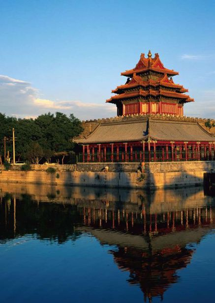
北京
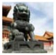
Beijing·觅古寻今路
当北京的阳光恣意倾斜在每个角落，那点点斑驳似乎淡忘了凝重的往昔，曾经那般深刻，如今终抵不过时间的轮回。轻轻地走着，轻轻地抚摸，古老京城的片片印记在视野中逐渐模糊，以为遗忘了的，却突然变得历历在目。蓦然发现，在这里，记忆的沟壑会被一点点填平，那行走在时光中的历史，依然象征着永恒。
故宫
The Imperial Palace
君 临 天 下
紫禁城已经和历史一同飘远，可是每当驻足在那座古老的宫殿前，依然会肃然起敬，也许是因为，如果抛开它所承载的时光，我们的今天，也便无从谈起。
君临天下，一种至高无上的权力。人们崇敬它，羡慕它，热爱它，敬仰它。然而将斑驳的历史放大，也许就在某个不为人知的瞬间，细节之处的一片枯叶突然抖落，一种莫名的情愫涌上心头。除了淡淡的哀伤，还有对于过去的眷恋。过去，“故”去，留得一片红墙垒砌的城池，在人们的记忆中。
故宫，又称紫禁城，是明清两代的皇宫，堪称当今世界上无与伦比的建筑杰作，比起法国的凡尔赛宫、英国的白金汉宫、美国的白宫以及俄罗斯的克里姆林宫更胜一筹，被荣耀地尊封为“世界五大宫之首”。
很多人慕名来到故宫，就是为了欣赏中国古代建筑的辉煌与帝王的奢华。故宫始建于公元1406年，1420年竣工。这片堪称世界最宏伟的宫殿建筑群，南北长961米，东西宽753米，建筑面积有15.5万平方米，内有大小院落90多座，房屋980间。上等木材、琉璃瓦顶、青白石座与各种金碧辉煌的彩画交相辉映，尽显出故宫的富贵荣华。
故宫很大，在游历之初，它的庞大往往超出人们的想象范畴。午门、东华门、西华门、神武门分守故宫东南西北四个方向，与神武门相对的，是用土、石筑成的公园——景山公园，里面种满松柏，象征着万古长青。
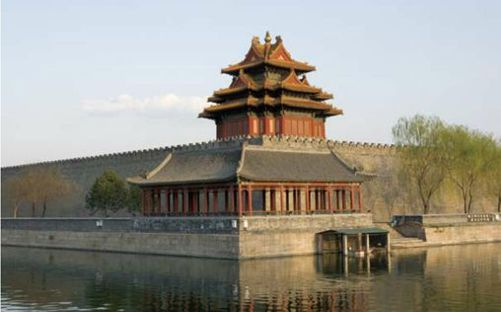
12米高、3400米长的宫墙将宫殿与护城河隔开，俯视故宫，52米宽的护城河就像一条蛟龙，静卧在宫殿门外，静静地守护着整座宫殿。
以乾清门为界，在故宫内部，“外朝”与“内廷”两部分的建筑风格变得迥然不同。外朝以太和殿、中和殿、保和殿为中心，是皇帝举行朝会的地方，也称“前朝”；内廷以乾清宫、交泰殿、坤宁宫为中心，是皇帝与后妃的住所。后人不远万里来到这座红色城池前瞻仰，举目四望，游走，触摸，感怀……之后在不同的记忆中，留下不同的印记。
太和殿俗称“金銮殿”，在这个高28米、东西63米、南北35米、贯穿72根1米长的柱子的宝殿上，依稀能看到当时举行大典的场景。造型精致的鹤、炉、鼎，雕刻精细的屏风与整个大殿相互映衬，显得庄严而又绚丽。太和殿，穿过那道门槛，眼前便是大好的锦绣前程。古往今来，太多的人走上仕途——这条坐享功成名就的道路。在一轮又一轮的前行中，远方模糊的灯塔，便是太和殿堂上那个宝座。于是，一个又一个年轻有为的励志青年不远万里进京赶考，为的是“独上高楼，望尽天涯路”后的豁然开朗。
昔人已去，日晷却依旧行使着自己的职责。
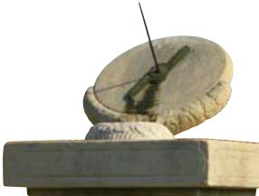
有人这样说过：“故宫的美，在于它的砖，它的柱，它的妃子。”但愿君心似我心，定不负相思意。后宫，如果没有那般纷繁、唯美的红颜，其色泽便会略显逊色。真正的爱，不止于浪漫，最高的境界便是超脱死生的轮回。宁寿宫颐和轩后廊旁边的“珍妃井”刻着珍妃对光绪帝的绝世之爱，因为爱之深刻，所以在冥冥中化做不朽，得以亘古及今，得以流芳万年。
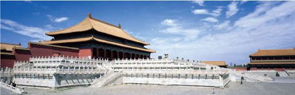
故宫典雅大气，几百年来经历着王朝变更，宫殿本身却依然映衬蓝天。
“天不老，情难绝，心似双丝网，中有千千结。”想象中的御花园，也许是姹紫嫣红，莺歌燕舞。可是跨入御花园才发现，满庭满院，处处是嶙峋的松柏和流芳的芍药。或许，那曾代表一种单纯的寄托，在帝王的眉宇间，也流露出对于万古长青的盼念。松树，故宫中满眼苍劲的、四季常青的松。渴望永生、渴望长生不老、渴望益寿延年，那时的心情，在后世的频频点头中得以深刻理解。一句“流水落花春去也，天上人间”似乎在不经意间便道出生命的真谛，面前如此的恢弘气势，如此的震慑人心，帝王们曾有过的盼念，其实早已在后人的瞻仰中得以实现。他们的崇高，他们的至尊，他们的万古长青，他们的英明千载……
走出神武门，登上景山，紫禁城的恢弘之气尽收眼底。一直以来，景山不仅闻名于滋养人心的地气，更闻名于它的三季花团锦簇，四季松柏常青。乾隆年间修筑的绮望楼，依山之势修建的五方佛亭，至今为人们所流连。那国色天香的牡丹在景山艳丽盛放，一副尊贵雍容的典雅瞬间便沐浴满园。一座人工修筑的皇家园林，就在这个偌大的京城低调地安享天年。每次凭吊崇祯帝辞世的古槐，每次看着写满记载的碑文，都会不禁慨叹。“忠臣必赖明君”，这是千古不变的真理。那是帝王用一生的命运来诠释的古训，值得今日的我们百般借鉴。
走出景山，看到护城河边石砖缝隙中钻出的嫩绿色小草，正在以顽强的姿态奋力生长着。心情突然觉得宽慰。这幸运的植物，天生便成长在充满帝王之气的紫禁城边，淡淡的绿色，却洋溢着生命的色彩。夕阳西下，小草摇曳的腰身与紫禁城中斑驳的红墙、暗黄的琉璃一起，凝成一道别具韵味的自然风景。
而故宫中的坤宁宫在故宫“内庭”最后，是明朝及清朝雍正帝之前的皇后寝宫，两头有暖阁，清代改为祭神场所。其中东暖阁为皇帝大婚的洞房，康熙、同治、光绪，均在此举行婚礼。
故宫正大光明殿
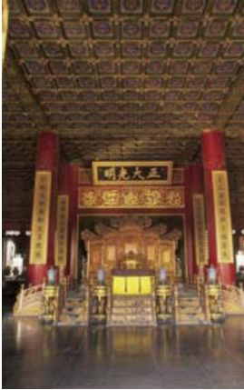
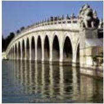
十七孔桥
颐和园
The Summer Palace
古 韵 清 风 拂 碧 波
古老的京城，斑驳的红墙，嶙峋的山园……任时光荏苒，这注定是一座古朴悠然中被满腹沧桑浸染的城市，却在前行的途中，愈加容光焕发。道路两旁的月季娇艳地盛开，园中的牡丹优雅舒展，一座座皇家园林，在太平盛世中，更显出无穷无尽的韵味。
颐和园，山青水幽，景色秀丽。它坐落在北京城的西北郊，因为京城的地势自北向南倾斜，因而成为名副其实的“风水宝地”，自古以来，这片土地集帝王将相万千宠爱于一身。1764年，时值中国最后一个封建盛世——康乾盛世，颐和园始建成。它原名清漪园，最初只是帝后宫妃们休闲避暑的场所，雍正帝继位后，开始长期居住在西郊园林中，连同政务、读书、游乐于一体，如此，这里逐渐成为了政治和娱乐的双重中心。“颐和”的本意源自“颐养太和”。1860年，颐和园在第二次鸦片战争中被英法联军烧毁，1886年，清政府挪用军饷对其重修，并改名为颐和园，作为慈禧太后晚年的颐养之地。除了紫禁城，这里是晚清统治者最重要的政治和外交活动中心，更是中国近代史的重要见证。
石舫长36米，上下两层均用大理石雕刻堆砌，船顶为砖雕装饰，窗户为彩色玻璃，船底为花砖铺地，精雕细琢之技艺可见一斑。下雨时，船身的四个龙头会自动将雨水排入湖中，设计异常巧妙。
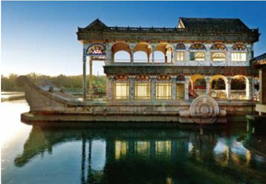
颐和园占地约290公顷，利用昆明湖、万寿山为基址，以杭州西湖风景为蓝本，汲取江南园林的设计手法和意境而建，是一座大型天然山水园，也是迄今为止保存得最为完整的皇家行宫御苑。
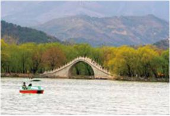
颐和园中，有很多地方是依照江南景观而建，而这座拱桥，却有着皇家古典气质。
“虽由人作，宛自天开。”在造园艺术中，颐和园无愧于其“皇家园林博物馆”的美名，集万家之大成，尽显皇家园林的恢弘富丽，同时充满了和谐自然的生趣盎然。亭台、长廊、殿堂、庙宇和小桥诸多人工景观与周围的自然山峦、粼粼湖面交相辉映，在中外园林艺术史上占有显著地位，自然在人们的意料之中。
规模宏大，是颐和园景区的第一大特色。在由万寿山和昆明湖两部分组成的景区中，水的面积便占到3/4。园内以佛香阁为中心，共有景点建筑百余座，院落20余处。佛香阁、长廊、石舫、苏州街、十七孔桥、谐趣园、大戏台等，都是后人游历时必观的景点，可谓世界建筑文化中的珍品。
万寿山下是长廊，长廊边上则是一波静默湖水。
未进颐和园，就已经被它雄伟的气势所感染。大门两侧傲然伫立的两座狮子，公狮右爪握球，象征一统江山；母狮左爪扶幼，象征母仪天下。走入大门是一对猪猴石，第二道大门，万寿石映入眼帘。万寿石后麒麟现身。在颐和园，世界上唯一一对“龙在下，凤在上”的雕塑，象征着慈禧太后至高无上的权利。
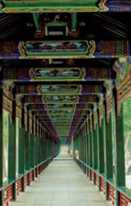
漫步于蜿蜒的长廊，抬头便能看到横梁上一幅幅精美的图画，或是历史故事或是“聊斋”传说，或是自然景观。
再往里，长廊显现。颐和园拥有世界上最长的长廊，1992年被列入“吉尼斯世界纪录”。它位于万寿山南麓，全长有728米，是中国园林中最长的游廊。700余米的游廊中，绘有图画14000余幅，传统故事、山水风景、花鸟鱼虫置于画中。
长廊穿过佛香阁。佛香阁是颐和园里最大的工程，皇室在此烧香。它位于万寿山前的山腰处，建在一个21米的长方形台基之上，是一座八面三层四重檐的建筑。阁高41米，8根巨大擎天柱支撑其间，结构复杂却异常精细。佛香阁以其庄重雄厚的风姿奠定了园中建筑群的主旋律，因为有它，方才凸显昆明湖的荡漾，万寿山的庄严；因为有它，皇家气派才能更添几分光辉。
颐和园的景区中，万寿山总能因其山间多而宏伟的建筑首先映入人们的眼帘。从山脚的“云辉玉宇”牌楼，经排云门、二宫门、排云殿、德辉殿、佛香阁，直至山顶的智慧海，形成了一条层层上升的中轴线。东侧有“转轮藏”和“万寿山昆明湖”石碑；西侧有五方阁和宝云阁；后山有西藏佛教建筑和五彩琉璃多宝塔；山上有景福阁、重翠亭、写秋轩、画中游等等，诸多亭台楼阁，登其上方，昆明湖中秀美景色尽收眼底。
众多山上建筑，智慧海让人印象颇为深刻。“智慧海”原为佛教用语，本意用来赞扬佛的智慧如海，佛的法力无边。这个建筑看似木结构，事实上没有用一根木料，全部是由石砖砌成。因为没有横梁，也被称为“无梁殿”，又因为其中供奉了无量寿佛，所以也称呼它为“无量殿”。整个建筑全部由精美的黄绿两色琉璃瓦装饰，中间夹杂少量紫蓝色琉璃，远远望去，色彩鲜艳，富丽堂皇。尤其外嵌于壁面的千余尊琉璃佛，更是让人心生虔诚。
颐和园中“画中游”
“画中游”是颐和园中的一处著名景点。它依万寿山而建，正面有一座两层的楼阁，左右有名为“爱山”、“借秋”的两座楼。阁后立有一座石牌坊，牌坊后边的是“澄晖阁”。建筑之间建有爬山廊。由于地处半山腰，加之建筑形式丰富多彩，所以远远望去，像是一幅中国山水画。
无论是远观或是近赏，昆明湖都是颐和园中最为娟秀的景色。碧波浩荡、余波淼淼，堤上桃柳成行，十七孔桥静卧湖中，西边那艘很美的大船，若不是石头做成，定会在乘风破浪之时尽显英雄气势。
那石船取名清晏舫，有“河清海晏”之意。在整个颐和园中，它是唯一带有西洋风格的一处建筑。之前作为明朝圆静寺的放生台，乾隆修建清漪园时改名为“石舫”。
古老的颐和园，从一个景点跨入另一个景点，便是从一个世界跨入另一个世界。这里景点之多，景色之异，数不胜数。
每当游人踏出颐和园的门槛，总是会不由得回眸。世事无常，风雨变幻，虽然历经百年沧桑，颐和园依然屹立于青山翠谷之中，历久弥新。
山水园林，到了颐和园，就会被它的皇家气质所感动。
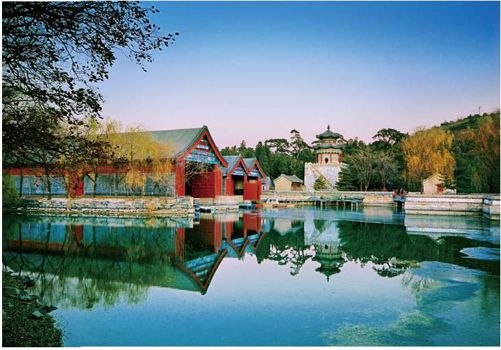
触摸北京的历史印迹 Beijing
有人说，在北京游走的过程，便是触摸历史的过程。也许只是不经意地一抬头，便与古色古香的亭台楼阁不期而遇，在这里，可以追忆逝去的岁月，也可以追逐美好的未来。
有人说，在北京游走的过程，便是触摸历史的过程。也许只是不经意地一抬头，便与古色古香的亭台楼阁不期而遇，在这里，可以追忆逝去的岁月，也可以追逐美好的未来。很多人来这里，都是为了圆却心中那个追逐多年的梦。
“不到长城非好汉”。对于这座世界最古老的伟大建筑之一，人们留下亲切而骄傲的激励。放眼望去，那一万两千多里的延绵不仅是真正中国古代文化的象征，更是整个中华民族的骄傲。浩大的工程，雄伟的气魄，中华民族的祖先时至今日仍然被全世界所钦佩，那伟大的建筑，让全世界的目光凝向一处——东方。
而天坛，是中国众多祭祀建筑中最具代表性的作品。它不仅是中国建筑中的璀璨明珠，更是世界建筑史上的绮丽瑰宝。肃穆、庄重、神秘、敬畏，遥想明清，每逢春秋大祭，帝王从紫禁城仪仗出行，来到这里，斋戒沐浴、奏乐礼拜，祈求上苍降福于人间，保佑黎民百姓风调雨顺。正是因为那些古老文化的滋养，才有今日如此优秀的华夏子孙。
踏着历史的足迹，来到雍和宫。这座除西藏地区以外，保存最完整、规模最宏大的喇嘛寺庙，来过的人无不被它辉煌的皇家园林建筑、神秘的藏传佛教神像以及独特的藏传佛教文化所吸引。那段最繁荣、最辉煌的历史风貌在这里被一一呈现。
昔日的“万园之园”，虽然今昔只剩下断壁残垣，却默默地向世人讲述着它的前世今生。在“圆明园”，人们感受到的，是对历史中辉煌的慨叹以及对屈辱的无奈。
静静漫步于北海，抬头望望那帝王心中的海上仙山，紫禁城西苑的美就这样尽收眼底。湛蓝的天空，湖面温柔的风，时不时地粼粼波光，站在历史与现在交替的地方，心中一片云淡风轻。
作为中国的首都，北京每一处繁华终究趋于平淡，令人铭记的，便成为历史。眼前的，将来的，皆是如此。然而，在追逐和探寻的过程中，内心依然雀跃，因为我们曾亲历其中，抚摸过那块砖，那片瓦，面对的时候，是永远的心潮澎湃。
北海，中国古代皇家园林。

蜿蜒的长城已经成为中国的象征，刻印在所有中国人的心里。
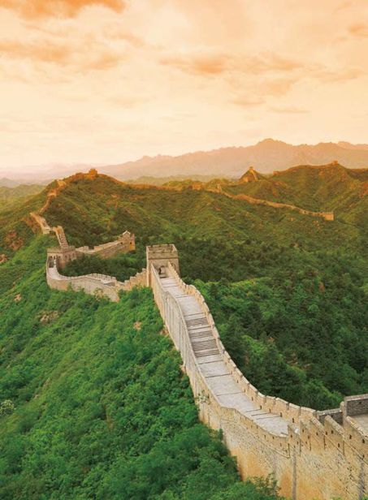
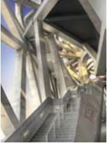
鸟巢内的楼梯
北京国家体育场
National Stadium of Beijing
呵 护 生 命 的 奇 迹
一个孕育生命的巢，似一个摇篮，哺育生命的同时，更寄托着人类对于未来的美好希冀。北京国家体育场——鸟巢，在2008之前被人们给予无限的期望，在2008之后，更是延续了奥运的精神，成为中国和世界建筑发展的历史见证。
鸟巢，一个平易近人的名字。像所有哺育者一样，对天真无邪的生命给予最精心的呵护。看似简约的设计，却倾注了艺术家的全部心血；看似支离的形状，却载满了人类对于生命力的推崇。
灯火辉煌的鸟巢映衬在周围湖水中。
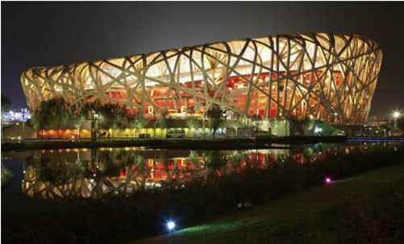
国家体育场——鸟巢，是2008年北京奥运会主体育场。它的设计者来自五湖四海，2001年，在普利茨克奖获得者赫尔佐格、卡梅隆以及中国建筑师李兴刚的通力合作下，一个生命的摇篮就此诞生。朴实的结构，丝毫没有掩饰地暴露于蓝天之下，在一片蔚蓝中显得无限宽阔。

夜色中的水润般的水立方和灯火明媚的鸟巢。
自然的滋养是生命最为珍贵的力量。体育场的外壳甚至可以作为填充物的气垫膜，致使屋顶完全达到防水的要求。即使如此，阳光依然可以穿透透明的屋顶，直接将赛场中央的草坪沐浴恒久。
在“鸟巢”中，随处可见的是设计中体现出的人文关怀。碗状坐席，使观众无论在哪个位置，都能和赛场中心的视线距离在140米之内；特殊的吸声膜材料，使赛场中的语音清晰指数达到0.6……利用流体力学原理，保证每个观众都能享受到同样的自然光以及通风。除此以外，还特地为残障人士设计了轮椅座位，为他们提供种种个性化服务。
然而“鸟巢”对于中国人的意义，已经远不止于建筑设计上的意义。永远忘不了记忆中的8月8日。那一天，这个充满寓意的伟大建筑真正走进人们的视线，在这里，60亿人的热情被满载其中，奇迹与梦想就此展开羽翼，向更宽阔的天际飞去。
奥林匹克的圣火照亮每张充满期待的面孔，56个民族，100多个国家，世界在一瞬间缩小成一团，被“鸟巢”温柔地包裹。一段神话、一个奇迹，在中华大地上空冉冉升起，鸟巢内的欢呼声一浪高过一浪，在全世界的注视中逐渐连成一片希望的海洋。
骄傲，那种骄傲从心底蔓延至全身。每次从亚运村经过，总是会在鸟巢跟前停下来，静静地观望与回忆。
那个瞬间，圣火点燃了一个新的奇迹。如果说奥运是世界带给中国的一个契机，那么，中国人无疑在这个机会里写下了前无古人的奇迹。你能看到，那颗古老的东方明珠早已破茧而出，从鸟巢起飞，展开健挺的翅膀，扶摇直上。
水立方
国家游泳中心又名“水立方”，是为北京2008年奥运会修建的主游泳馆，位于奥林匹克公园内。同时，它又是本届奥运会标志性的建筑物之一。建设用地62950平方米，地下部分的建筑面积大于15000平方米。长宽高分别为177米、177米、30米，同“鸟巢”一起，分列城市中轴线北段的两侧，为历史文化名城北京再树形象。
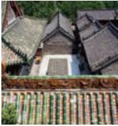
北京的胡同中的老四合院
北京的胡同
Beijing’s Hutong
呵 护 生 命 的 奇 迹
北京的胡同，仿佛是这座城市肌肤上的纹理，每时每刻都流淌出生动而又清晰的生活景象。
老北京的味道，似乎融入了各种细腻的滋味，胡同，四合院，豆汁……
胡同，是北京特有的一种古老的城市小巷，大多形成于13世纪的元朝，到现在已经经过了几百年的演变发展，数量浩繁到上千条，它们围绕在紫禁城周围，走向多为正东正西。胡同里的建筑几乎都是四合院。
胡同不仅是百姓们出入家门的通道，更是一座座民俗风情博物馆，烙下了许多社会生活的印记，充满着老北京的生活气息。
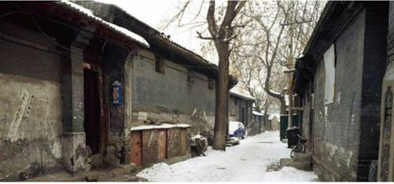
“北京有名的胡同三千六，没名的胡同赛牛毛。”漫游在北京的胡同里，会发现它有着很深的意味。北京的胡同外表上看差不多，但它们的特色却各不相同。南锣鼓巷是一处保留得比较完整的区域，虽然时近700年，这里依然保持着元代的“鱼骨式”格局。从元朝到今天，虽然昔日的烟花柳巷已经成为历史遗迹，然而这些胡同却在日光之下自顾自地生息繁衍着，保持着一成不变的肤色。如今，这条巷子已经成为京城胡同文化的典范，游历其中，个性化的小店与古朴的建筑风格交相辉映，让人流连忘返。
烟袋斜街
烟袋斜街是从鼓楼到什刹海银锭桥之间的一条纤细的斜街，历史上，这条街以卖烟袋、烟具为主。据说，有一家名叫“双盛泰”的烟袋铺曾竖立一个五尺来高木雕大烟袋，烟袋锅和烟袋嘴均涂铜色，烟袋杆刷黑漆，烟袋锅上系着红绸，迎风摆动。烟袋斜街因此而得名。
北京的胡同可以说是北京历史的见证者，很多胡同里的一块砖、一片瓦都有上百年的历史——长廊的油漆已经布满伤痕，顶上瓦片中间生出顽强的各式小草，雕梁画栋也已残缺不全……但是，看着它们，并不会因为他们的陈旧而感到失望，反而会为了它们的残缺，感觉到那种幽深的美感，遂震撼于历史的沧桑变幻。
将过去融入未来，这也是北京的胡同文化今天的调调儿。外显的表象里，依然可以寻到历史的内容——街头艺人的拿手绝活、依然奔跑着的黄包车、街边古老的风味小吃店、路边操着京腔大声聊天的老人们……
穿梭在北京的胡同，仿佛时间停滞了。事实上，这些并不是错觉，你能看到，历史与现代在眼前不停地穿梭。
静静的北京的胡同，韵味十足。
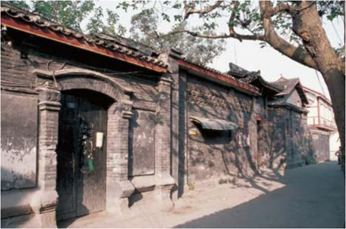
黑芝麻胡同的门墩
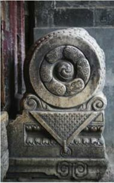
天津
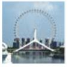
Tianjin·静水幽城
古老的天津卫，一座懂得享受悠哉的日子的城市。它从来不张扬，却在循序渐进中走进人们的视野，地位之固，坚不可摧。它是内敛的、古朴的，同时又是惬意的、牛气的，几个段子就逗得人们前仰后合，几个包子就馋得人们垂涎欲滴，几个泥人就引得人们爱不释手……一遭之后，人们便再也忘不掉它。
海河
Haihe River
静 夜 思
这里也许没有黄浦江的浩瀚，也许没有珠江的蜿蜒，也许没有牡丹江的娟秀，可是游走的时候，总能一下便体会出它的独到之处，望着夜色中的海河，伴着对往昔的追忆，重新书写，一首令自己满意的诗篇就这样呈现在眼前。
行走在天津的街道，很容易不知不觉中陷入无限遐思。这片从前的租界，早已告别那时的繁华，一点点萧瑟从心底滋生，像是掺杂进历史的悲情，一下陷入感伤。然而，海河的出现却扭转了整个局面，看着它静静地流过，仿佛载着旧日的时光，连伤感也一同被带走。流淌着的海河为整个天津平添了几许妩媚，几许灵气。白天河面的波光粼粼，夜晚河边的灯火阑珊，映衬着岸上高大的澳式建筑，隐隐透出当年的气派。蜕去历史的外衣，那接近日耳曼风格、毗邻意大利风格的建筑，与马可波罗广场交相辉映，广场中央的标志建筑——和平女神雕像，似乎在昭示着古老的天津卫那份单纯的欲望。
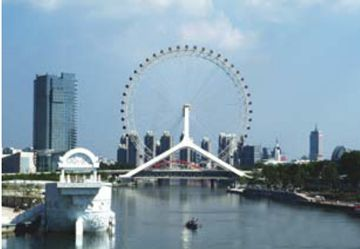
海河的长乐桥，像一个摩天轮。
海河是天津的母亲河，西起天津金刚桥，东至大沽口入海，全长有70多千米，横贯整个天津闹市。时至今日，海河早已经从历史中蜕变，现在，它作为消暑度假的胜地，为人们提供了几许休闲的乐趣。
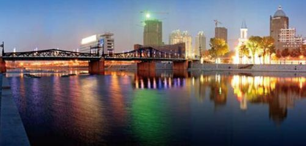
海河美丽的夜景
夜游海河，在仲夏如火的空气里感受那抹清新的凉意，悉心体会河面上的凉风习习，这样的体验，美哉乐哉。夜幕下的海河，似银河行走于天际。皓月星空之下，海河显得格外多姿多彩。来到塘沽海河外滩公园，踏上即将开航的豪华游船，耳边充斥着游人们的欢声笑语。继而汽笛声划破长夜，一段奇妙的旅程就此开始演绎。
彩色激光伴着被誉为世界第一的水上喷泉，26种水球和巨大火球一下涌入人们的视线。刹那间，岸上的一切都变得迷离起来。“师夷长技以自强”，这片土地，曾经是清代洋务运动建立的上海轮船招商局码头和法德租界，如今，却成为了人们戏水的休闲胜地，不得不感慨万千。民族的昌盛注定了今日的繁华，从历史向后看，我们前进的脚步正是足印铿锵。塘沽车站，1888年建立的新中国第一条标准轨铁路车站，就屹立在海河岸边，往来如梭的车灯照耀着它斑驳的身影，120年的历史使得它成为人们永远的记忆。再往前，天津港内核码头一片繁荣的景象，这里，曾承载着厚重的历史。中国第一铁路材料处，中国第一机械化煤矿销售地……
游船航行的过程，其实是人们不断丰富自我内心的过程。在整个行走的过程中，往事历历在目。浪花中泛起的点点波光，似乎承载着记忆中的一隅，与今天相互比较的过程中，逐渐眉头舒展，嘴角上扬。
海河的雕塑，存留西方的感觉。
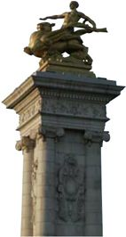
古文化街
Ancient Culture Street
民 俗 欢 歌 映 古 街
记得小时候，只要听到“逗你玩”三个字，便会咯咯地笑出声来。那时候不知道马老爷子，更不知道天津卫，然而20多年之后，却开始重新品味那三个字中的深刻内涵。
天津卫是个特别的地方，到鼓楼镇北门的茶社听一段原汁原味的相声，在传统的街道中体验民俗风貌的别致，扇几下古玩市场里写满狂草的折扇，之后淘件褂子在铃铛阁前拍照留念，似乎就在一瞬间的功夫，顿觉时光倒流回到从前；也就是在那么一瞬间，方才如梦初醒。
在天津，以天后宫为中心的文化古街，总是因为其独特的味道被四方宾客赞誉。南口的楼排上，“津门故里”四个大字高高悬起，就这一块小小的牌子，却道出了800年的玄机。享誉内外的“狗不理”，更会让你驻足。
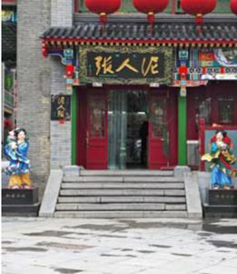
泥人张早在清代乾隆、嘉庆年间便为人所知。
天津的古文化街全长580米，其中囊括了各式类别、步移景换的百余家店铺。清代风格的建筑在这里被巧妙地演绎，青砖砌体，磨墙对缝，坡顶阁楼随处可见，平定小轩时入眼帘。在这市井相连着的古文化街，来自五湖四海的工艺品齐聚一堂，既有汇聚了浓厚天津特色的杨柳青年画，又有享誉中外的巧匠“泥人张”，与此齐头并进的，当然是“风筝魏”这位能工巧匠。一个风筝，不知不觉飞向国际。魏元泰也从此被人们亲切地称呼为“风筝魏”。他生于1872年，在生平70余年的风筝制作过程中，他以精湛的做工、逼真的造型以及十足的民族特色，在巴拿马国际博览会上赢得巨奖。这不仅是才艺，更是中国民间文化的瑰宝。
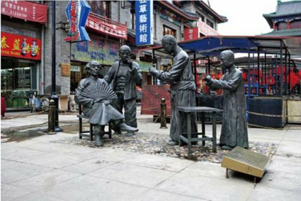
鼓楼商业街上的雕塑，有浓浓的老天津的味道。
在古文化街，总有看不完的景观和抒不尽的感慨，敲一敲民间的打鼓，听一听民间的乐器，看一看耸入云端的高跷，这里的盛况，本应在时光倒流之时才能着实体验，却在天津卫这条街上，觅到了踪影。
到天津不吃“狗不理包子”如同到北京不登长城，会成为行程中莫大的遗憾。热气腾腾爽眼舒心的狗不理包子，是津味文化中的杰出代表。小小的包子，却如同薄雾之中含苞秋菊，让人垂涎欲滴。咬上一口，油水汪汪，香而不腻。历史上，慈禧太后对狗不理包子甚是喜爱；当今，它同样深得百姓和外国友人的青睐……
大沽炮台
Dagu Fort Site
威 立 着 的 百 年 沧 桑
在历史上，大沽海口被誉为“津门之屏”，明代，大沽口开始设置防御，清代修建炮台，之后设施不断完善，遂形成了以“威，镇，海，门，高”为主体的防御体系。在近代，因为遭受侵略，这里更是成为北方的军事要地。“南有虎门，北有大沽”，它在历史中的地位不言自明。
老天津人一直津津乐道于天津的三宗宝——鼓楼、炮台、铃铛阁。今日的它们，也许已经随着岁月的风尘逐渐被人们遗忘，可是历史，却深刻而清晰地呈现着它们与天津卫的渊源。
大沽炮台之上，一门门古铜色的土炮，坚实而厚重地伫立，体积庞大的主炮如同狮群傲然挺立，面朝东方的那片海域。相对于主炮，其他土炮群体积略小，炮身弹痕累累，却依然坚守着自己的岗位。
凝视整个炮台，那丝毫不能引人注目的场景其实正是人们来到这里的真正缘由。埋藏在炮台历史之中的，是那一段坚决抵抗外国侵略的爱国史，那红色的记忆，从不因岁月的流逝而褪色。
极目远眺之时，仿佛四周顿起火光，浓烟滚滚。坚守阵地的士兵，将爱国热情融入炮弹，面对敌人的残酷，毫无惧色，且更加勇猛……
山河依旧在，几度夕阳红。
大沽炮台就是如此一座门，扣开将士们爱国之心的真切，更扣出中华民族永垂不朽的灵魂。
古老的大炮已经不再威风凛凛，但依然如昨日守候。
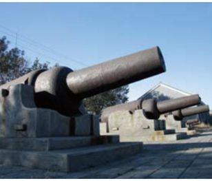